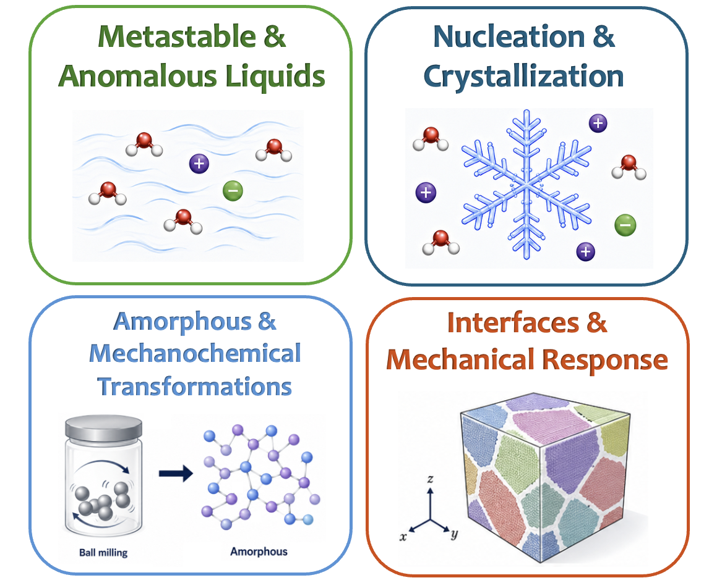

My research uses molecular simulations, statistical thermodynamics, and data-driven analysis to understand how microscopic structure and molecular interactions govern phase behavior, transport, and mechanical response in complex condensed phases. I focus on metastable and anomalous liquids, including water and aqueous electrolytes. Across these systems, I am interested in nucleation and crystallization, amorphous transformations, ion-specific effects, interfacial phenomena, mechanical properties and the connection between local structure and macroscopic properties. My work addresses fundamental questions in condensed matter physics while also connecting to atmospheric science, environmental systems, cryopreservation, and aqueous batteries.

⭐ Our recent work on water’s “no man’s land” was featured in an AIP Scilight article. (April 2026)
⭐ I'm happy to be featured in a University of Utah article about CHPC, alongside fellow Molinero Group postdocs! (April 2025)
⭐ Our research on Medium-Density Amorphous Ice was recently highlighted by the University of Utah! (February 2025)
⭐ Our work on bacterial ice nucleation has been featured in a press release by the MPI for Polymer Research! (October 2024)
⭐ Featured in a Department of Chemistry interview highlighting my postdoctoral research in the Molinero Group. (April 2024)
🏆 Honored to receive the IBP2022 Biointerphases Presentation Award! (September 2022)